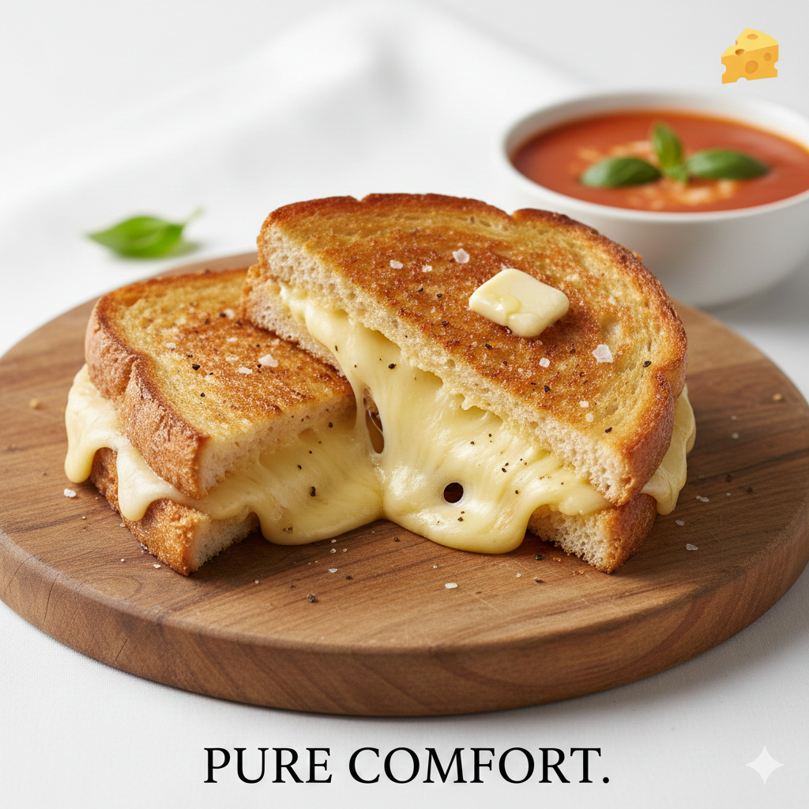

This recipe is simple, comforting, and only requires five core ingredients and five easy steps to make an
testfull Grilled Cheese Sandwich!

Ingredients List
- 2 slices of your favorite bread (e.g., sourdough, white, or whole wheat)
- 2 slices of cheese (e.g., cheddar, American, or provolone)
- 1 tablespoon of butter (or mayonnaise, if you prefer a crispier crust)
- A pinch of salt
- A pinch of black pepper
Instructions
Follow these steps for a golden, gooey grilled cheese:
- Prepare the Bread:Spread the butter (or mayonnaise) evenly on one side of each slice of
bread, all the way to the edges.
- Assemble the Sandwich:Flip one slice of bread so the buttered side is facing down. Layer
the two slices of cheese on top, and sprinkle with salt and pepper. Place the second slice of bread on top,
with the buttered side facing up.
- Start Grilling:Place the assembled sandwich in a non-stick skillet or frying pan over
medium-low heat. Cook for about 3-4 minutes, or until the bottom slice is a beautiful golden brown.
- Flip and Finish:Carefully flip the sandwich using a spatula. Continue to cook for another
3-4 minutes on the second side, pressing down lightly with the spatula. The cheese should be completely
melted, and the bread should be evenly golden brown.
- Serve Immediately:Remove the sandwich from the pan, slice it in half (optional but
recommended for dipping!), and serve while it's hot and the cheese is gooey.